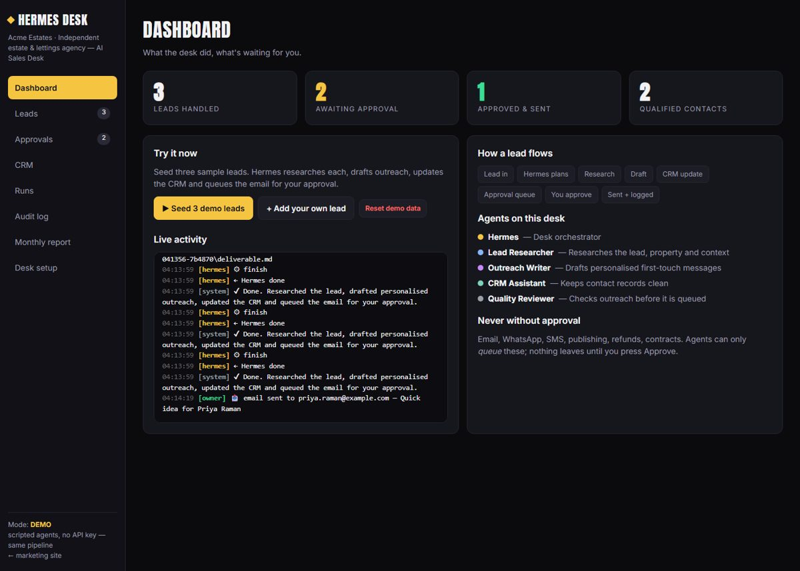
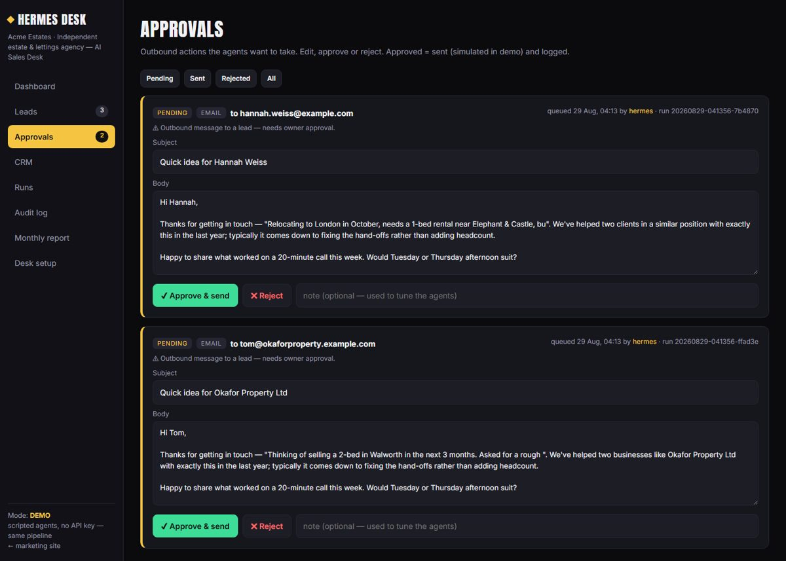
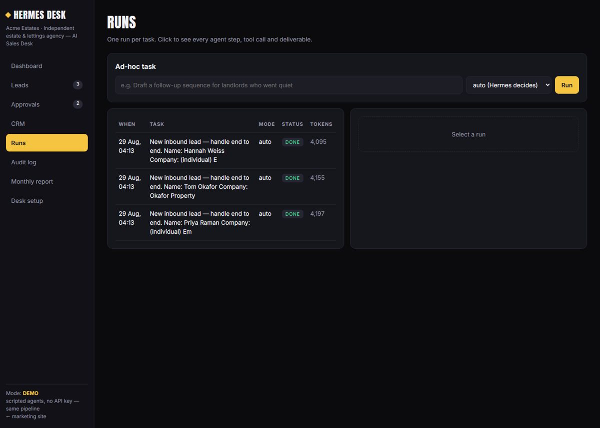
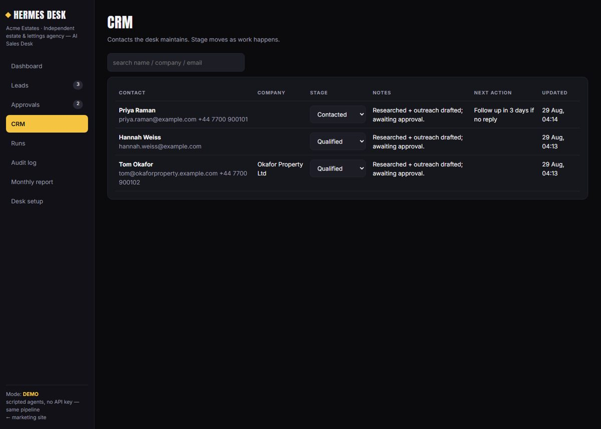
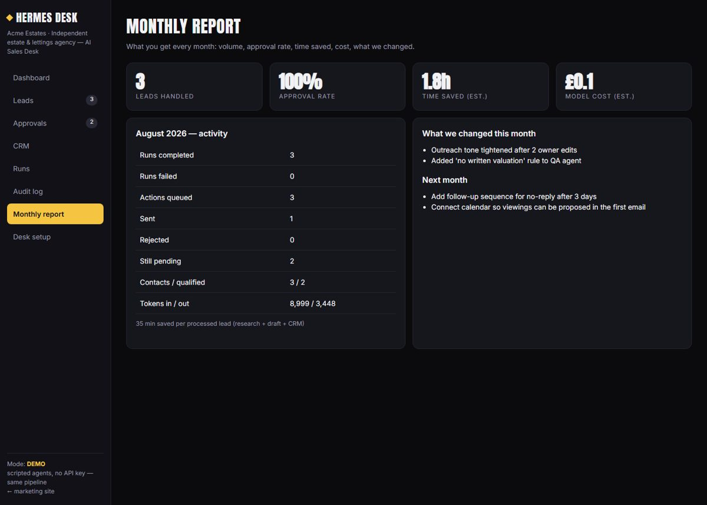

Bring us your business and its process. We map it, connect your accounts, configure a team of specialised AI agents with approval rules — then run and improve it every month. You stay in control of anything that touches money, contracts or customers.
A desk is a team of AI agents built around one job in your business — an orchestrator that plans and delegates, specialists that do the work, and an approval queue for you. We start with the desk that pays back fastest.
Finds leads, researches them, drafts personalised outreach, updates your CRM and prepares follow-ups — you approve before anything is sent.
Answers enquiries, books and reschedules appointments, sends reminders, escalates anything it shouldn't decide.
Plans and drafts content, product copy, email flows and partner outreach, then reports on what moved the numbers.
Turns a brief into research, strategy, pricing and a client-ready proposal, reviewed by a QA agent before it reaches you.
A form, an email, a WhatsApp. It lands with Atlas — the orchestrator — which reads it, checks your rules, and plans the work.
Research digs into who they are. Writer drafts the reply in your tone. CRM checks history. QA stands by. All at once, not one after another.
Atlas assembles the pieces. QA checks facts, tone and policy and its edits get applied. Anything weak goes back for another pass.
The finished draft waits in your queue. Approve, edit or reject in seconds. Your notes tune the agents for next time.
The email goes, the CRM updates, the follow-up is scheduled. Every step is on the audit trail and in your monthly report.
A working prototype of the AI Sales Desk. Leads come in, agents do the work, you approve from one queue. Runs in demo mode with scripted agents so you can click through it — the same pipeline runs on live models for clients.





We sit with you and write down how the function actually runs today — inputs, decisions, hand-offs, what "good" looks like.
Email, calendar, CRM, forms, WhatsApp, Slack, your documents. Your data stays in your accounts.
Specialised agents with your tone, rules and templates. Approval rules for anything sensitive.
Agents work the queue. You approve, edit or reject from one inbox. Nothing risky goes out on its own.
We watch failures, tune prompts and workflows, and add capability monthly. You get a report and a roadmap.